— DATA STRUCTURE / 02
第二章 链表
顺序表扩容要整段搬家，链表靠指针把零散的结点串起来：单链表、双向链表、循环链表与静态链表。
01 / SECTION
顺序存储和链式存储
- 顺序存储（数组）：元素在内存中连续存放，可随机访问，但插入、删除要成片移动元素。
- 举例：在 {1,2,3,4,5,6,7} 第 2 个位置插入 'A'，需要把后面所有元素整体后移再覆盖，步骤繁琐。
- 数组两大弊端：① 移动元素多，浪费算力；② 必须预先开足够大的空间，否则有溢出风险。
- 链式存储（链表）：元素分散存放，靠指针把结点串起来，内存随用随申请、自适应大小。
- 结点由「数据域 + 指针域」组成：DATA 可为 int、结构体等任意类型；NEXT 指向下一个结点，尾结点的 NEXT 指向 NULL。
- 插入、删除只需修改指针指向，不必搬运数据，这是链表最大的优势。
- 代价：每个结点要多存一个指针，空间开销更大，且不支持随机访问（不能按下标直接取）。
- 本章依次讲三种形态：单链表、双链表（双向链表）、循环单链表，思路大同小异。
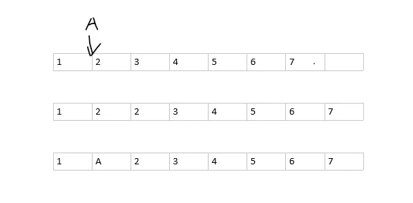


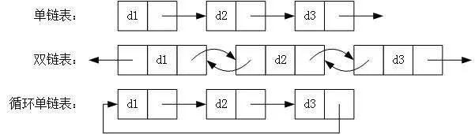
02 / SECTION
单链表的基本设计（C语言代码实现）
- 概念：用“结点的序列”表示的线性表称单链表，属链式存取结构；结点 = 数据元素 + 指向后继的指针。
- 结点定义（
Node为结点类型，LinkedList为指向结点的指针类型）：
cpp
typedef struct Node {
int data; // 数据域
struct Node *next; // 指针域
} Node, *LinkedList;- 初始化：申请一个头结点空间，
next置 NULL 表示空表；务必判断L == NULL（申请失败要报错或退出），生产环境可用 C++ 的 try-catch 兜底。 - 头插法：新结点插在头结点之后，代码只需两句——
p->next = L->next; L->next = p;。特点：写法简单，但得到的是逆序链表。 - 尾插法：必须额外维护尾指针
r（初始指向头结点），每次r->next = p; r = p;，最后r->next = NULL。特点：结果与输入顺序一致。 - 两种创建方式无本质区别，都是逐个 malloc 新结点再挂接指针，只是挂接位置不同。
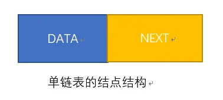
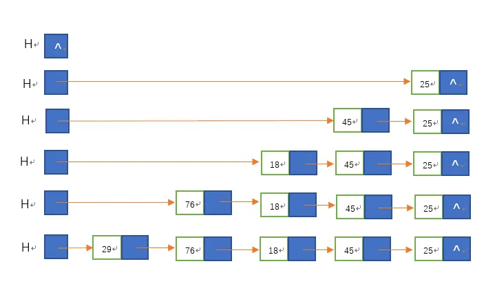
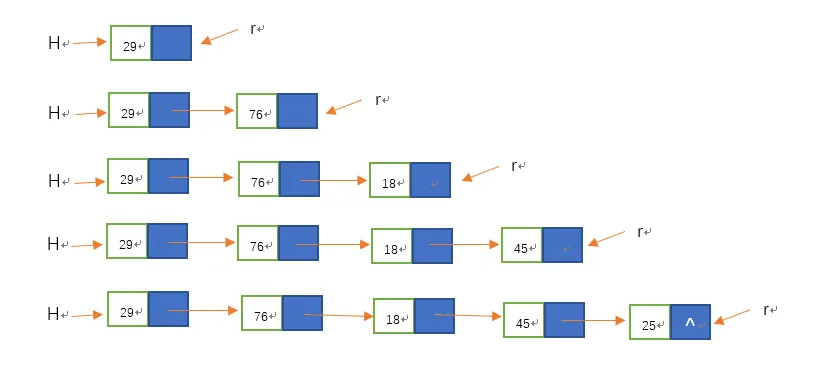
03 / SECTION
单链表的基本操作及C语言代码实现
- 遍历：从头结点的下一个结点开始，
while(p){ ...; p = p->next; }；遍历可衍生出打印、查询、修改、统计长度等操作。 - 只读操作可用
void返回；涉及修改结构的操作习惯返回LinkedList。 - 插入（第 i 个位置插入 x）：先找第 i 个位置的前驱 pre（循环 i-1 次），再执行
cpp
p->next = pre->next;
pre->next = p; // 顺序不能反，否则断链- 删除（删除值为 x 的结点）：用 pre 和 p 双指针查找，命中后
pre->next = p->next; free(p);。 - 删除必须 free 被删结点，否则内存泄漏；插入删除的时间开销主要在“找位置”，为 O(n)。
- 完整实现一般包含 6 个函数：初始化、头插建表、尾插建表、插入、删除、修改，加
printList输出验证。 - 推荐配套练习：Dotcpp 1676 题、1052 题。
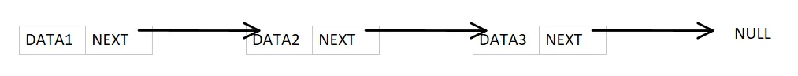
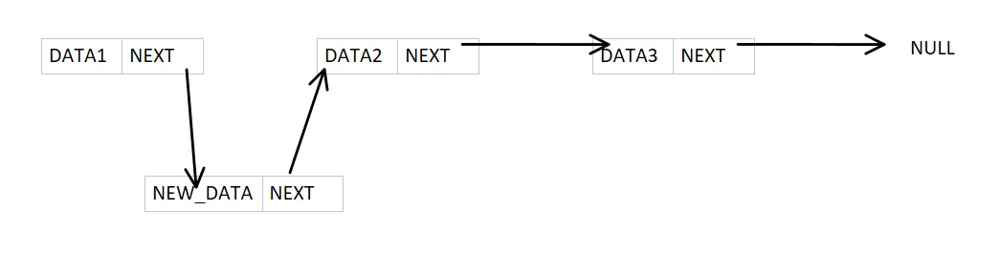
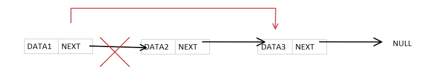
04 / SECTION
双向链表的基本设计（C语言代码实现）
- 单链表的不足：只有一个后继指针，单向访问；想回溯或从后往前找，只能反复从头遍历。
- 双向链表：每个结点有两个指针，
pre指向前驱、next指向后继，从任一结点都能方便地访问前后结点。 - 完整形态：头结点的
pre为空，尾结点的next为空，其余结点前后互链。 - 结点定义：
cpp
typedef struct line {
int data;
struct line *pre; // 前驱
struct line *next; // 后继
} line, *a;- 创建：先建头结点（注意：双链表头结点也存数据，这点与单链表的“空头结点”不同），再逐个 malloc 新结点，执行
list->next = body; body->pre = list; list = list->next;
- 理解技巧：把过程拆成“建头结点 → 建新结点 → 双向挂接 → 再建新结点”，反复对照代码看两遍即可。

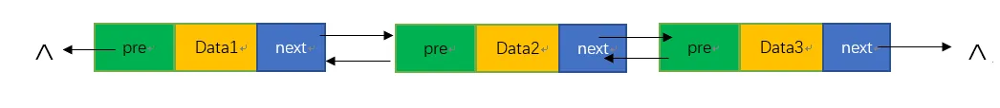
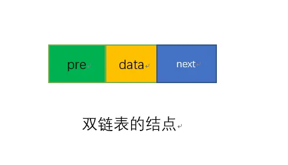
05 / SECTION
双向链表的基本操作及C语言代码实现
- 插入：先 malloc 新结点 temp 并赋数据；插在表头要单独处理（
temp->next = head; head->pre = temp; head = temp;）。 - 插在中间/表尾：先找插入位置的前一个结点 body，然后分两种情况：
- body 已是尾结点（
body->next == NULL）：body->next = temp; temp->pre = body; - 插在中间，四句指针修改：
body->next->pre = temp; temp->next = body->next; body->next = temp; temp->pre = body; - 删除：命中结点后两步改指针，再 free：
list->pre->next = list->next; list->next->pre = list->pre; free(list);
- 注意：删除头结点或尾结点时，
list->pre/list->next为空会出问题，实际实现需特判。 - 遍历：与单链表一样沿
next走即可，while(list)与while(list->next)判空效果等价；也可反向利用pre指针遍历。 - 双链表练习较少，可拿单链表的题（1676、1585）改用双链表实现来练手。
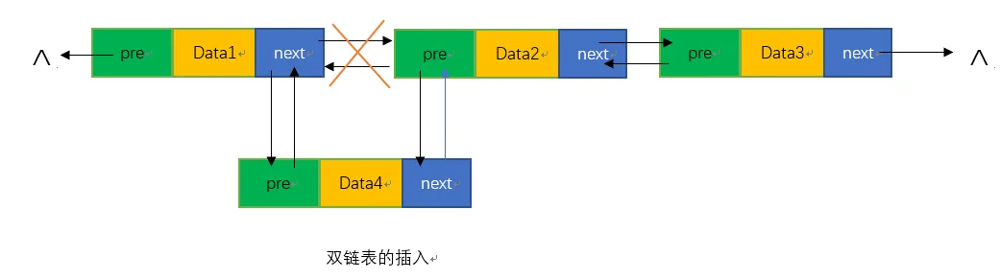
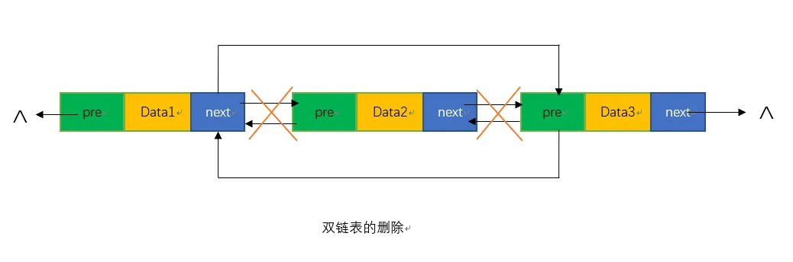
06 / SECTION
循环链表的介绍及创建（C语言代码实现）
- 核心差别：非循环链表尾结点指向 NULL，循环链表尾结点指向头结点，从而首尾相接、可无限绕圈。
- 把单链表的尾结点指向头结点，即得循环单链表（Circular Linked List）。
- 结点设计与单链表完全一致（data + next），只是尾结点的 next 指向开头；只有一个结点时 next 指向自身。
- 初始化：malloc 头结点，成功后将
head->next = head（也可在 init 里置 NULL，调用后再手动指向自身，方便后续复用插入函数）。 - 创建：逐个插入——从 head 出发
while(p->next != head) p = p->next;找到尾结点，再p->next = node; node->next = head; - 循环链表的最大坑是遍历没有 NULL 终点，必须靠“回到 head”（或计数）来判断结束。
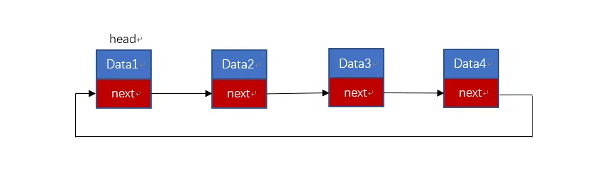
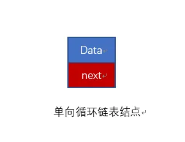
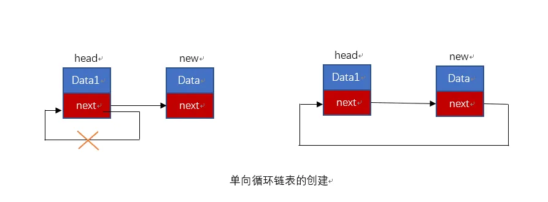
07 / SECTION
循环链表的基本操作及C语言代码实现
- 插入：与单链表一致，找到第 pos 个结点 t，然后
node->next = t->next; t->next = node;。 - 删除：核心口诀是「前驱.next = 自身.next」，这样写可省去大部分头尾特判；但删除尾结点时要让新的尾结点指回 head。
- 删除实现要点：用 temp 记录头结点作“退出点”，ptr 从头结点的下一个结点开始，
while(ptr != head)循环；若ptr->next == head（是尾结点），则temp->next = head; free(ptr); - 遍历：不能用判 NULL 的方式，要用
while(p->next != head)；另一种方式是计数器 count 与结点数比较后退出（缺点是仍需先知道结点数）。 - 三种链表对比记忆：单链表尾指 NULL；双链表双向指、首尾为空；循环链表尾指 head。
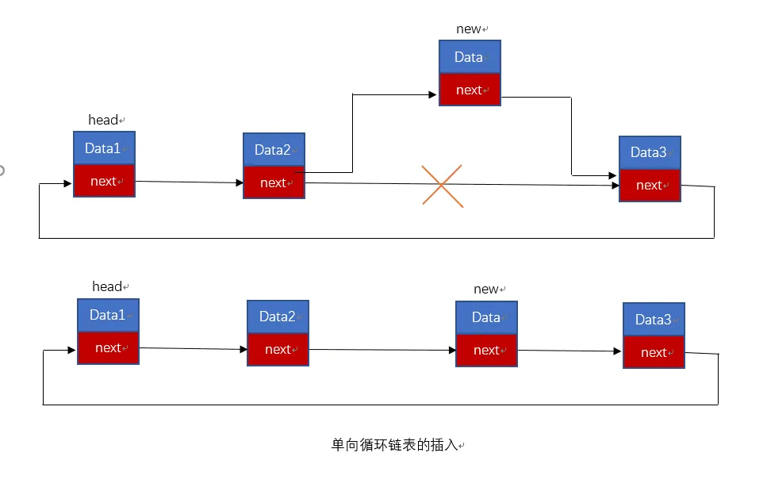
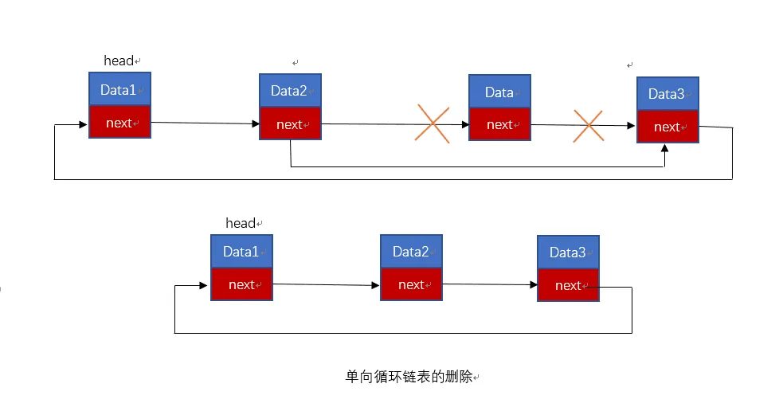